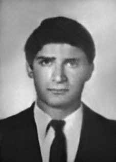

Ruy
Carlos
Vieira
Berbert
CIRCUNSTÂNCIAS DA MORTE
Ruy Carlos Vieira Berbert desapareceu após ter sido detido pela Polícia Militar do Estado de Goiás na cidade de Natividade, hoje no estado de Tocantins, no dia 31 de dezembro de 1971. Referências ao militante são encontradas em alguns relatórios produzidos pelas forças armadas sobre a Operação Ilha, que foi montada a partir de informações do Centro de Informações do Exército (CIE), que alertou aos demais órgãos de segurança acerca da presença de militantes pertencentes à dissidência da ALN no norte de Goiás.
O objetivo da Operação Ilha, segundo documento encaminhado pelo Serviço Nacional de Informações (SNI) à Presidência da República, era “localizar e desbaratar núcleos terroristas instalados no Norte do Estado de Goiás, constituídos por elementos da ALN, procedentes de Cuba”. Os referidos “elementos” eram os militantes Jeová de Assis Gomes, Boanerges de Souza Massa, Sérgio Capozzi, Jane Vanini, Otávio Ângelo e o próprio Ruy Carlos Vieira Berbert, que retornaram ao Brasil após treinamento de guerrilha em Cuba.
Para a execução da Operação Ilha foram deslocadas três equipes com militares do DOI/CODI do Comando Militar do Planalto, do DOI da 3ª Brigada de Infantaria e do CIE para o norte de Goiás, todos com trajes civis. Após alguns dias de buscas, as equipes confirmam a presença de Jeová Assis Gomes na região de Araguaína. Em 21 de dezembro de 1971, Boanerges de Souza Massa foi preso em Pindorama (GO) pela polícia local. Em seguida foi deslocado para Brasília e submetido a interrogatório. Em 31 de dezembro de 1971, o delegado Pedro Soares Lopes, o sargento da Polícia Militar Oswaldo de Jesus e o cabo Roque Fraga Amorim detiveram Ruy Carlos Vieira Berbert na cidade de Natividade, portando documentação com o nome de João Silvino Lopes.
Segundo o relatório do delegado, já se suspeitava, na ocasião da prisão, da falsidade dos documentos em nome de João Silvino Lopes. Ainda segundo o relatório, João Silvino teria se suicidado na cadeia pública de Natividade, na madrugada do dia 3 de janeiro de 1972. Em função da morte, o Secretário de Segurança Pública do Estado de Goiás deslocou Paulo Celso Braga, do Departamento de Polícia Federal (DPF/SDR/GO) e o Capitão da Polícia Militar Eurípedes Ferreira Rios, chefe do Serviço Estadual de Informações, para averiguar a morte de Ruy Berbert. Ao descrever a cela, Paulo Celso Braga relatou que o militante teria feito uso da corda de sua rede para cometer o suicídio. Afirmou, também, que a corda teria sido amarrada na trave do prédio da prisão, que se encontrava a uma altura superior a 12 metros.
Ressalte-se que, para o intento, Ruy Berbert teria que ter escalado paredes bastante altas sem pontos de apoio visíveis. Por outro lado, uma vez alcançado o local onde estaria atada a corda, bastaria afastar algumas telhas para poder fugir. O delegado da Polícia Civil Pedro Soares Lopes explicou que diante da ausência de médicos na cidade, o laudo de exame cadavérico foi feito pelos enfermeiros Maria Lima Lopes e Carmindo Moreira Granja, e que o enterro havia sido no cemitério local às 18h30, de 2 de janeiro de 1972, custeado pela Prefeitura Municipal.
Já de acordo com o relatório da Polícia Federal, o médico que atendia a população local, Colemar Rodrigues Cerqueira, teria se recusado a fazer a autópsia de Berbert, razão pela qual teria sido feita por um farmacêutico. Elemento que demonstra a fragilidade dos documentos produzidos em Natividade no período é o fato da cidade não contar com um escrivão na delegacia ou na cadeia pública. Dessa forma, parte dos documentos que instruem a investigação da morte de Ruy Berbert foi produzida e atestada por Vicente Rodrigues Cordeiro, um escrivão ad hoc nomeado pelo delegado local Pedro Lopes.
Embora já tivesse falecido, e portanto, com a punibilidade penal extinta, Ruy Berbert foi condenado à revelia a 21 anos de reclusão, pela 2ª Auditoria da Justiça Militar Federal, em São Paulo, pelo sequestro do avião da Varig. Até 1979 não havia nenhuma informação sobre o paradeiro de Ruy Carlos Vieira Berbert, preso, identificado e sepultado como João Silvino Lopes. Sua morte e a de mais 11 desaparecidos foram confirmadas pelo general Adyr Fiúza de Castro, em declaração publicada em matéria do jornalista Antônio Henrique Lago à Folha de S. Paulo, em 28 de janeiro de 1979. Em meados de junho de 1991, a Comissão de Investigação das Ossadas de Perus 261/90 recebeu da Pastoral da Terra um atestado de óbito em nome de João Silvino Lopes, com a descrição do local, das circunstancias de seu suicídio e com a informação de que tal documento pertenceria a “algum militante político”.
Em janeiro de 1992, a Comissão de Familiares de Mortos e Desaparecidos Políticos encontrou nos arquivos do DOPS/SP uma relação intitulada: “Retorno de Exilados”, endereçada ao então delegado Romeu Tuma. No documento constava o nome de Ruy Carlos com a observação de que ele havia cometido suicídio em 1972 na cadeia de Natividade. Somente então foi possível relacionar o nome de Ruy Carlos com João Silvino Lopes. Além disso, nos documentos do DOPS do Paraná foi encontrada, na gaveta “falecidos”, a ficha de Ruy Carlos Vieira Berbert. Com a ajuda da Comissão de Representação da Câmara dos Deputados, criada em dezembro de 1991 para acompanhar a questão dos desaparecidos políticos, a Comissão de Familiares organizou uma caravana da qual participaram os deputados Nilmário Miranda e Roberto Valadão; o advogado Idibal Piveta, representando a família de Ruy Berbert e a OAB/SP; Hamilton Pereira, da Comissão Pastoral da Terra e Suzana Keniger Lisboa.
A caravana colheu testemunhos de moradores e servidores públicos, a partir dos quais foi possível confirmar a suspeita de que João Silvino e Ruy Carlos eram, de fato, a mesma pessoa. Diante dessa informação, Ruy Jaccoud Berbert, pai de Ruy Carlos, pôde embasar o pedido de retificação da certidão de óbito de seu filho. A Juíza de Direito da Comarca de Natividade, Sarita Von Roeder Michels, concluiu os termos da retificação da certidão de óbito. A correção suprimiu o nome falso do documento fazendo constar em seu lugar o nome de Ruy Carlos. As informações obtidas também apontavam uma possibilidade de localização dos restos mortais.
Diante disso, seus familiares entraram em contato com o departamento de medicina legal da Universidade Estadual de Campinas (UNICAMP) para poder proceder à exumação e identificação dos restos mortais. As informações coletadas, no entanto, ainda eram insuficientes para estabelecer um perímetro para escavação. Em maio de 1993, a família depositou uma urna funerária contendo antigos pertences pessoais de Ruy Berbert em jazigo na cidade de Jales (SP), enterrando-o simbolicamente.
Somente em junho de 2012, com a entrada em vigor da Lei de Acesso à Informação (lei nº 12.527/2011), foi localizado no acervo do Arquivo Nacional uma pasta com seis fotografias de Ruy Carlos Vieira Berbert morto. As fotos comprovam que o Centro de Informações do Exército já o havia identificado por ocasião de sua morte. As fotos de Ruy Carlos foram as primeiras imagens de uma vítima da Ditadura Militar, morta em dependências do Estado, divulgadas após a abertura política.
A família de Ruy Carlos entregou as fotos a um perito que atestou que a morte não foi decorrente de suicídio. Em 2012, o Ministério Público Federal propôs uma ação civil em face da União pela omissão na identificação dos autores e circunstâncias dos “atos desumanos” praticados contra Ruy Carlos Vieira Berbert. Em 2014, a família conseguiu nova retificação do atestado de óbito. O desembargador Andre Nabarrete determinou que na certidão de óbito de Ruy Carlos passasse a constar como causa da morte “asfixia mecânica por enforcamento, decorrente de maus tratos e torturas.”
Diante da não localização e identificação de seus restos mortais, a Comissão Nacional da Verdade considera que Ruy Carlos Vieira Berbert permanece desaparecido.
Ruy Carlos Vieira Berbert disappeared after being detained by the Military Police of the State of Goiás in the city of Natividade, today in the state of Tocantins, on December 31, 1971. References to the militant are found in some reports produced by the armed forces about Operation Island, which was assembled based on information from the Army Information Center (CIE), which alerted other security bodies about the presence of militants belonging to the ALN dissent in the north of Goiás.
The objective of Operation Island, according to a document sent by the National Information Service (SNI) to the Presidency of the Republic, was “to locate and dismantle terrorist groups installed in the North of the State of Goiás, made up of elements of the ALN, coming from Cuba”. The aforementioned “elements” were the militants Jeová de Assis Gomes, Boanerges de Souza Massa, Sérgio Capozzi, Jane Vanini, Otávio Ângelo and Ruy Carlos Vieira Berbert himself, who returned to Brazil after guerrilla training in Cuba.
To carry out Operation Island, three teams with military personnel from the DOI/CODI of the Planalto Military Command, the DOI of the 3rd Infantry Brigade and the CIE were deployed to the north of Goiás, all in civilian clothes. After a few days of searching, the teams confirmed the presence of Jeová Assis Gomes in the Araguaína region. On December 21, 1971, Boanerges de Souza Massa was arrested in Pindorama (GO) by the local police. He was then transferred to Brasília and subjected to interrogation. On December 31, 1971, delegate Pedro Soares Lopes, Military Police Sergeant Oswaldo de Jesus and Corporal Roque Fraga Amorim detained Ruy Carlos Vieira Berbert in the city of Natividade, carrying documentation with the name of João Silvino Lopes.
According to the delegate's report, it was already suspected, at the time of the arrest, that the documents in the name of João Silvino Lopes were false. According to the report, João Silvino committed suicide in the public prison of Natividade, in the early hours of January 3, 1972. Due to his death, the Secretary of Public Security of the State of Goiás sent Paulo Celso Braga, from the Federal Police Department (DPF/SDR/GO) and Military Police Captain Eurípedes Ferreira Rios, head of the State Information Service, to investigate the death of Ruy Berbert. When describing the cell, Paulo Celso Braga reported that the militant had used the rope from his hammock to commit suicide. He also stated that the rope had been tied to the beam of the prison building, which was at a height of more than 12 meters.
It should be noted that, for this attempt, Ruy Berbert would have had to climb very high walls with no visible support points. On the other hand, once you reach the place where the rope would be tied, you would just have to move a few tiles aside to be able to escape. Civil Police Chief Pedro Soares Lopes explained that given the absence of doctors in the city, the cadaver examination report was carried out by nurses Maria Lima Lopes and Carmindo Moreira Granja, and that the burial had taken place in the local cemetery at 6:30 pm, on January 2, 1972, paid for by the City Hall.
According to the Federal Police report, the doctor who served the local population, Colemar Rodrigues Cerqueira, refused to carry out Berbert's autopsy, which is why it would have been carried out by a pharmacist. An element that demonstrates the fragility of the documents produced in Natividade during the period is the fact that the city did not have a clerk at the police station or in the public jail. Thus, part of the documents that inform the investigation into Ruy Berbert's death was produced and attested by Vicente Rodrigues Cordeiro, an ad hoc clerk appointed by local delegate Pedro Lopes.
Although he had already died, and therefore, with criminal punishment extinguished, Ruy Berbert was sentenced in absentia to 21 years in prison, by the 2nd Audit of the Federal Military Justice, in São Paulo, for the hijacking of the Varig plane. Until 1979 there was no information about the whereabouts of Ruy Carlos Vieira Berbert, arrested, identified and buried as João Silvino Lopes. His death and that of 11 other missing persons were confirmed by General Adyr Fiúza de Castro, in a statement published in an article by journalist Antônio Henrique Lago in Folha de S. Paulo, on January 28, 1979. In mid-June 1991, the Perus Bones Investigation Commission 261/90 received from Pastoral da Terra a death certificate in the name of João Silvino Lopes, with a description of the location, the circumstances of his suicide and with the information that the document belonged to “some political activist”.
In January 1992, the Commission for Relatives of Political Dead and Missing Persons found in the DOPS/SP archives a list entitled: “Return of Exiles”, addressed to the then delegate Romeu Tuma. The document included Ruy Carlos' name with the observation that he had committed suicide in 1972 in the Natividade prison. Only then was it possible to relate the name of Ruy Carlos with João Silvino Lopes. Furthermore, in the Paraná DOPS documents, Ruy Carlos Vieira Berbert's file was found in the “deceased” drawer. With the help of the Representation Committee of the Chamber of Deputies, created in December 1991 to monitor the issue of missing politicians, the Family Committee organized a caravan in which representatives Nilmário Miranda and Roberto Valadão participated; lawyer Idibal Piveta, representing Ruy Berbert's family and OAB/SP; Hamilton Pereira, from the Pastoral Land Commission and Suzana Keniger Lisboa.
The caravan collected testimonies from residents and public servants, from which it was possible to confirm the suspicion that João Silvino and Ruy Carlos were, in fact, the same person. Given this information, Ruy Jaccoud Berbert, Ruy Carlos' father, was able to support the request for rectification of his son's death certificate. The Judge of the District of Natividade, Sarita Von Roeder Michels, concluded the terms of rectification of the death certificate. The correction removed the false name from the document, replacing it with the name of Ruy Carlos. The information obtained also pointed to the possibility of locating the remains.
As a result, his family contacted the department of legal medicine at the State University of Campinas (UNICAMP) to exhume and identify the remains. The information collected, however, was still insufficient to establish a perimeter for excavation. In May 1993, the family deposited a funeral urn containing Ruy Berbert's old personal belongings in a tomb in the city of Jales (SP), symbolically burying him.
Only in June 2012, with the entry into force of the Access to Information Law (law no. 12,527/2011), a folder with six photographs of the deceased Ruy Carlos Vieira Berbert was located in the National Archives collection. The photos prove that the Army Information Center had already identified him at the time of his death. Ruy Carlos' photos were the first images of a victim of the Military Dictatorship, killed on State premises, released after the political opening.
Ruy Carlos' family handed the photos to an expert who certified that his death was not the result of suicide. In 2012, the Federal Public Ministry proposed a civil action against the Union for failing to identify the perpetrators and circumstances of the “inhumane acts” carried out against Ruy Carlos Vieira Berbert. In 2014, the family obtained a new rectification of the death certificate. Judge Andre Nabarrete determined that Ruy Carlos' death certificate should now include the cause of death as “mechanical asphyxiation due to hanging, resulting from ill-treatment and torture.”
Given the failure to locate and identify his remains, the National Truth Commission considers that Ruy Carlos Vieira Berbert remains missing.
Ruy Carlos Vieira Berbert desapareció tras ser detenido por la Policía Militar del Estado de Goiás en la ciudad de Natividade, hoy estado de Tocantins, el 31 de diciembre de 1971. Se encuentran referencias al militante en algunos informes elaborados por las Fuerzas Armadas sobre la Operación Isla, que fue elaborado a partir de informaciones del Centro de Información del Ejército (CIE), que alertó a otros órganos de seguridad sobre la presencia de militantes de la disidencia del ALN en el norte de Goiás.
El objetivo de la Operación Isla, según un documento enviado por el Servicio Nacional de Información (SNI) a la Presidencia de la República, era “localizar y desmantelar grupos terroristas instalados en el Norte del Estado de Goiás, integrados por elementos de la ALN, provenientes de Cuba”. Los “elementos” antes mencionados fueron los militantes Jeová de Assis Gomes, Boanerges de Souza Massa, Sérgio Capozzi, Jane Vanini, Otávio Ângelo y el propio Ruy Carlos Vieira Berbert, quien regresó a Brasil después de un entrenamiento guerrillero en Cuba.
Para realizar la Operación Isla, fueron desplegados en el norte de Goiás tres equipos con militares del DOI/CODI del Comando Militar de Planalto, el DOI de la 3.ª Brigada de Infantería y el CIE, todos vestidos de civil. Luego de algunos días de búsqueda, los equipos confirmaron la presencia de Jeová Assis Gomes en la región de Araguaína. El 21 de diciembre de 1971, Boanerges de Souza Massa fue detenido en Pindorama (GO) por la policía local. Luego fue trasladado a Brasilia y sometido a interrogatorio. El 31 de diciembre de 1971, el delegado Pedro Soares Lopes, el sargento de la Policía Militar Oswaldo de Jesus y el cabo Roque Fraga Amorim detuvieron a Ruy Carlos Vieira Berbert en la ciudad de Natividade, portando documentación con el nombre de João Silvino Lopes.
Según el informe del delegado, ya se sospechaba, en el momento de la detención, que los documentos a nombre de João Silvino Lopes eran falsos. Según el informe, João Silvino se suicidó en la cárcel pública de Natividade, en la madrugada del 3 de enero de 1972. Debido a su muerte, la Secretaría de Seguridad Pública del Estado de Goiás envió a Paulo Celso Braga, del Departamento de Policía Federal (DPF/SDR/GO) y al Capitán de la Policía Militar Eurípedes Ferreira Rios, jefe del Servicio de Información del Estado, para investigar la muerte de Ruy Berbert. Al describir la celda, Paulo Celso Braga informó que el militante había utilizado la cuerda de su hamaca para suicidarse. También afirmó que la cuerda estaba atada a la viga del edificio penitenciario, que se encontraba a una altura de más de 12 metros.
Cabe señalar que, para este intento, Ruy Berbert habría tenido que escalar muros muy altos sin puntos de apoyo visibles. Por otro lado, una vez llegues al lugar donde estaría atada la cuerda, solo tendrás que apartar unas cuantas fichas para poder escapar. El jefe de la Policía Civil, Pedro Soares Lopes, explicó que ante la ausencia de médicos en la ciudad, el informe de examen del cadáver fue realizado por los enfermeros María Lima Lopes y Carmindo Moreira Granja, y que el entierro se realizó en el cementerio local a las 18.30 horas del 2 de enero de 1972, costeado por la Municipalidad.
Según el informe de la Policía Federal, el médico que atendía a la población local, Colemar Rodrigues Cerqueira, se negó a realizar la autopsia a Berbert, por lo que la misma habría sido realizada por un farmacéutico. Un elemento que demuestra la fragilidad de los documentos producidos en Natividade durante el período es el hecho de que la ciudad no contaba con un empleado en la comisaría ni en la cárcel pública. Así, parte de los documentos que informan la investigación sobre la muerte de Ruy Berbert fueron elaborados y atestiguados por Vicente Rodrigues Cordeiro, secretario ad hoc designado por el delegado local Pedro Lopes.
Aunque ya había fallecido, y por tanto extinguida la pena penal, Ruy Berbert fue condenado en rebeldía a 21 años de prisión, por la 2ª Auditoría de la Justicia Militar Federal, en São Paulo, por el secuestro del avión Varig. Hasta 1979 no hubo información sobre el paradero de Ruy Carlos Vieira Berbert, detenido, identificado y enterrado como João Silvino Lopes. Su muerte y la de otros 11 desaparecidos fueron confirmadas por el general Adyr Fiúza de Castro, en una declaración publicada en un artículo del periodista Antônio Henrique Lago en Folha de S. Paulo, el 28 de enero de 1979. A mediados de junio de 1991, la Comisión de Investigación de Huesos de Perus 261/90 recibió de Pastoral da Terra un certificado de defunción a nombre de João Silvino Lopes, con una descripción del lugar, las circunstancias de su suicidio y con la información de que el documento pertenecía a “algún activista político”.
En enero de 1992, la Comisión de Familiares de Muertos y Desaparecidos Políticos encontró en los archivos del DOPS/SP una lista titulada: “Retorno de los Exiliados”, dirigida al entonces delegado Romeu Tuma. El documento incluía el nombre de Ruy Carlos con la observación de que se había suicidado en 1972 en la prisión de Natividade. Sólo entonces fue posible relacionar el nombre de Ruy Carlos con el de João Silvino Lopes. Además, en los documentos del DOPS de Paraná, el expediente de Ruy Carlos Vieira Berbert fue encontrado en el cajón del “fallecido”. Con ayuda de la Comisión de Representación de la Cámara de Diputados, creada en diciembre de 1991 para acompañar la cuestión de los políticos desaparecidos, la Comisión de Familia organizó una caravana en la que participaron los diputados Nilmário Miranda y Roberto Valadão; el abogado Idibal Piveta, en representación de la familia de Ruy Berbert y de la OAB/SP; Hamilton Pereira, de la Comisión Pastoral de la Tierra y Suzana Keniger Lisboa.
La caravana recogió testimonios de vecinos y servidores públicos, de los que se pudo confirmar la sospecha de que João Silvino y Ruy Carlos eran, en realidad, la misma persona. Ante esta información, Ruy Jaccoud Berbert, padre de Ruy Carlos, pudo sustentar la solicitud de rectificación del certificado de defunción de su hijo. La jueza del Distrito de Natividade, Sarita Von Roeder Michels, concluyó los términos de rectificación del certificado de defunción. La corrección eliminó el nombre falso del documento, reemplazándolo por el nombre de Ruy Carlos. La información obtenida también apuntaba a la posibilidad de localizar los restos.
Como resultado, su familia contactó al departamento de medicina legal de la Universidad Estadual de Campinas (Unicamp) para exhumar e identificar los restos. Sin embargo, la información recopilada aún fue insuficiente para establecer un perímetro de excavación. En mayo de 1993, la familia depositó una urna funeraria que contenía antiguos objetos personales de Ruy Berbert en una tumba en la ciudad de Jales (SP), enterrandolo simbólicamente.
Recién en junio de 2012, con la entrada en vigor de la Ley de Acceso a la Información (ley nº 12.527/2011), una carpeta con seis fotografías del fallecido Ruy Carlos Vieira Berbert fue localizada en el acervo del Archivo Nacional. Las fotografías prueban que el Centro de Información del Ejército ya lo había identificado en el momento de su muerte. Las fotos de Ruy Carlos fueron las primeras imágenes de una víctima de la Dictadura Militar, asesinada en locales del Estado, difundidas tras la apertura política.
La familia de Ruy Carlos entregó las fotografías a un perito que certificó que su muerte no fue consecuencia de un suicidio. En 2012, el Ministerio Público Federal propuso una acción civil contra la Unión por no identificar a los autores y las circunstancias de los “actos inhumanos” perpetrados contra Ruy Carlos Vieira Berbert. En 2014, la familia obtuvo una nueva rectificación del certificado de defunción. El juez André Nabarrete determinó que el certificado de defunción de Ruy Carlos ahora debe incluir como causa de muerte “asfixia mecánica por ahorcamiento, resultante de malos tratos y torturas”.
Ante la falta de localización e identificación de sus restos, la Comisión Nacional de la Verdad considera que Ruy Carlos Vieira Berbert continúa desaparecido.